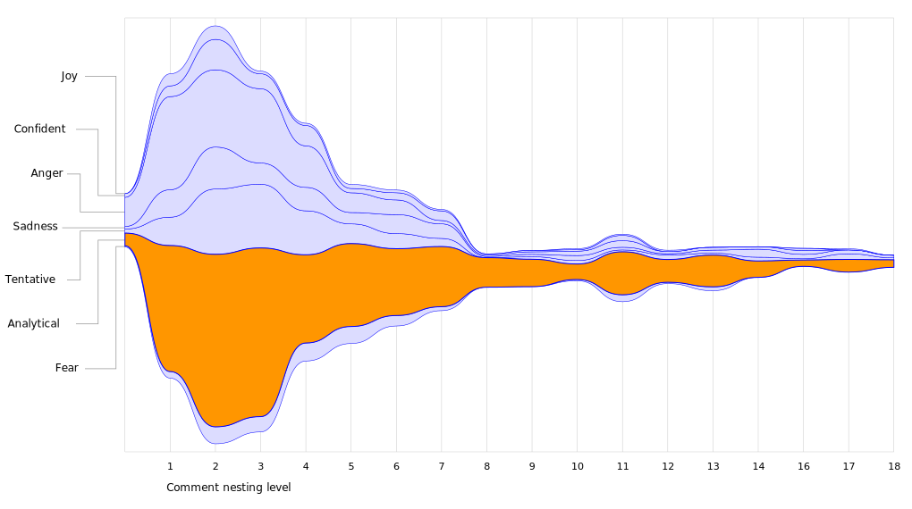
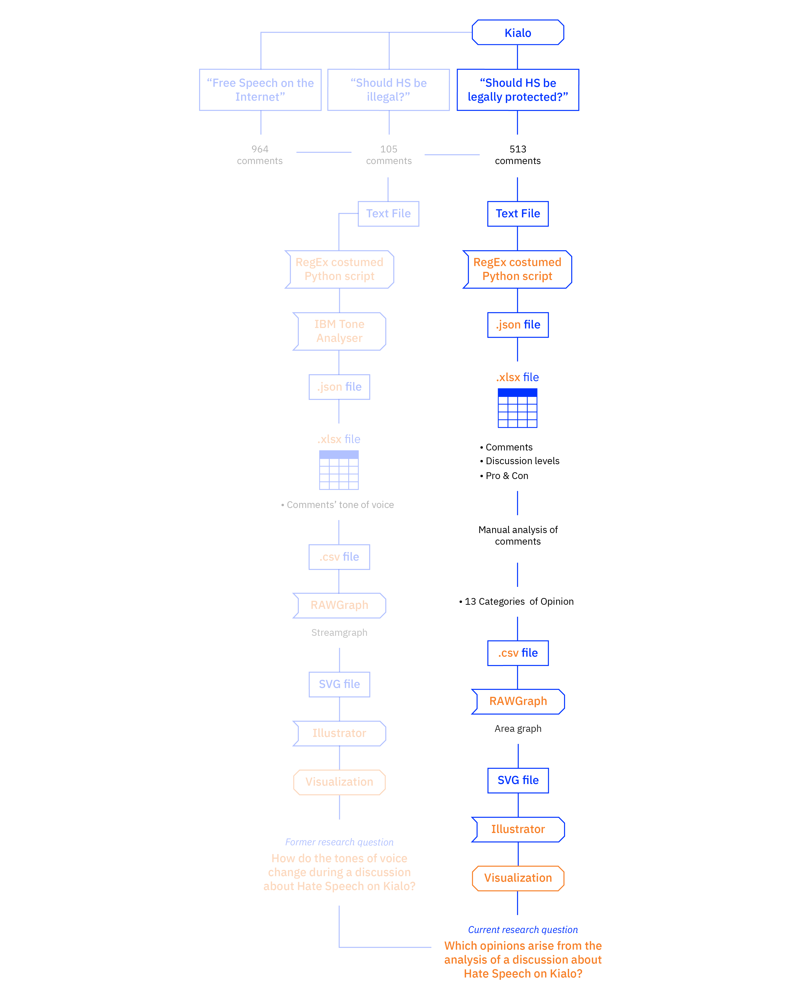

Description
The visualization shows the lack of a shared viewpoint on Hate speech among this sample group, since the users partecipating to the discussions have very different opinions on the subject; this suggests that the debate is intense and far from agreement. As we discovered from protocol 1, the sources that users find on the web tend to promote strongly polarized opinions—against or pro hate speech and not neutral—so we expected to find the same situation in this sample. But against our expectations, in the two discussions analysed the situation is more “balanced”, meaning that there are a lot of comments that explore different nuances of the controversy.
During the analysis of the users’ opinions on Hate Speech the need and the importance of regulating this phenomenon was highlighted several times, in order to avoid any harm or crimes that could derive from it. Moreover, from these comments it appears that this need is often strongly felt in a reality like the web, which has always been characterized by almost complete freedom. So, regulating the proliferation of hatred in an online environment involves the use of filtering mechanisms, although they can be also considered as censorship. Indeed, on the opposite side, there is an equally powerful voice that accuses this search for moderation to generate episodes of abuse of power.
As said, in this visualization we wanted to highlight the users’ opinions about Hate Speech, positioning them according to their depth in the discussion, in order to understand which ideas were the most popular and shared and at what level. Each opinion has a different color grading in order to help reading the graph and to better identify the different opinions. The thicker the area, the higher is the number of comments that corresponds to that specific opinion at that level. As the mouse passes over the areas, it appears a random example of one of the comments relative to that opinion.
The idea to use discussions on Kialo as a sample came after having analyzed how people form an opinion through online sources. Since Kialo is a social network designed specifically to engage users in organized discussions, we decided to analyze two specific conversations about Hate Speech that took place on the platform, “Should hate speech be illegal?” and “Should hate speech be legally protected?” that had respectively 105 and 513 comments.
The second visualization clarifies the reason why we chose Kialo for our analysis in the first place: the discussion has a climax at the second nesting level and then the comments gradually decrease, so the lively debate takes place in the very first part of the whole post dedicated to the controversy. But the most important thing that we noticed is that the majority of the comments were classified as “analytical” and that corresponded with the moderated style that Kialo wants to promote in the discussions. This classification was made with the help of the IBM Tone Analyzer, an API that clusterized the comments in seven categories—“joy”, “confident”, “anger”, “sadness”, “tentative”, “analytical” and “fear”—due to the different tones used throughout the two discussions. The nesting level of the comments corresponds to the distance from the query that generated the discussion, so the level “0” coincides with the very first comments.

Protocol

We queried “Hate Speech” on Kialo, which gave back fourteen results: we then selected the two first results—“Should hate speech be illegal?” and “Should hate speech be legally protected?”—since they were more specific for our research interests.
We scraped the discussions using Regular Expressions on Python (RegEx Python) using a custom script that automatically assigned each comment to a specific category defined by the IBM Tone Analyzer API in order to get structured data from the plain text file provided by Kialo. The JSON file that resulted was converted into a CSV file and then converted again into an Excel file, which was later uploaded on RawGraphs in order to start displaying the data; the resulting SVG file was later refined with Adobe Illustrator.
From the same Excel file we manually clustered the 618 comments of the two conversations in order to get 14 categories of opinions: “Hate speech leads to hate crime”, “Hate speech is harmful and needs to be regulated”, “Hate speech must be fought with more speech”, “Censoring hate speech leads to more speech”, “Fighting hate speech by ignoring it”, “Fighting hate speech with education”, “We still don’t know what hate speech is”, “Defining hate speech boundaries”, “Context is the key”, “Hate speech is hate speech only when it causes real actions”, “Hate speech is free speech”, “Hate speech doesn’t lead to hate crime”, and “Hate speech is a construct used to kill free speech”. During the analysis of the comments, we noticed that the ones that were far from the main query were not pertinent to the discussion, so we decided not to consider them in the visualization. The resulting Excel file was then uploaded on RawGraphs in order to start displaying the data; the resulting SVG file was later refined with Adobe Illustrator.